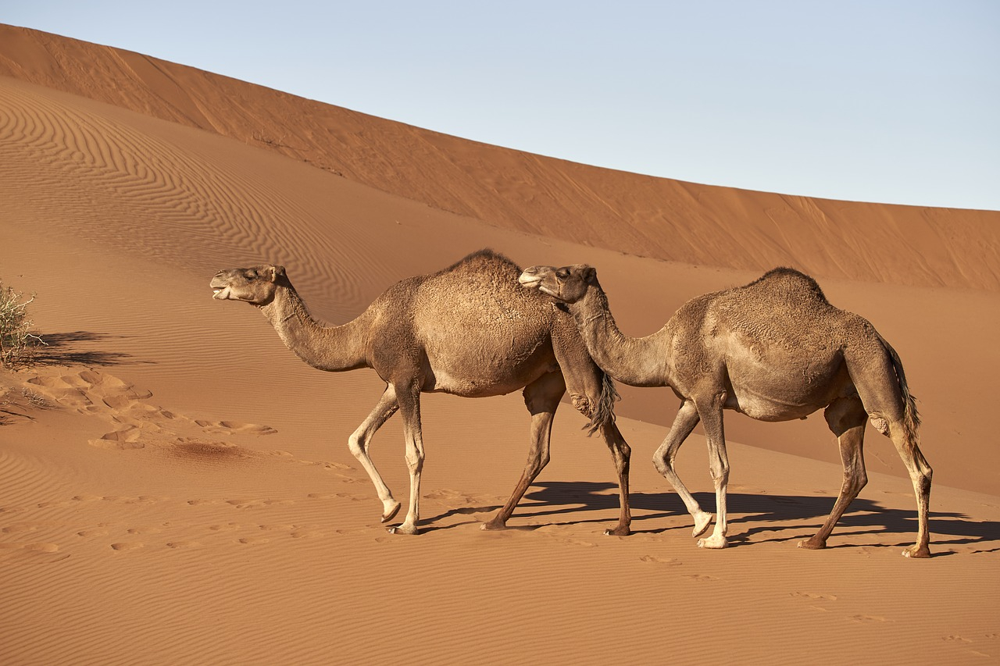

A sivatagok állatai is változatos módon alkalmazkodnak a zord életkörülményekhez, a vízhiányhoz. Vannak köztük olyanok, amelyek a legmelegebb és legszárazabb időszakot mély nyugalmi állapotban vészelik át. A nyári álom ideje alatt anyagcseréjük lecsökken, így könnyebben viselik el a hőséget, kevesebbet párologtatnak. Mások az éjszakai órákban járnak élelmet keresni, így kerülik el a túlzott felmelegedést és az ezzel járó vízvesztést. Megint mások raktározott tápanyagaik elégetésével, sejtjeikben állítják elő az élethez nélkülözhetetlen vizet.
Állatvilág
Sivatagi róka
A sivatagi róka (Vulpes zerda) a ragadozók (Carnivora) rendjébe és a kutyafélék (Canidae) családjába tartozó faj. A rókák és egyben a kutyafélék családjának legkisebb termetű faja. Észak-Afrika, a Sínai-félsziget és az Arab-félsziget sivatagaiban él. Testtömege 0,7-1,6 kilogramm, testhossza 24–41 centiméter, farka 18–31 centiméter hosszú és fekete végű. Marmagassága alig éri el a 20 centimétert. A nagy fülei 10-15 centiméteresek; ezek a talaj alatt mozgó zsákmány észrevételére hasznosak; viszont ha kénytelen nappal is előjönni, akkor a fülei a nagy felületük miatt hőleadásra szolgálnak.
A bundája gyakran krémszínű és bolyhos, mely nappal védi az erős napsütéstől, míg éjszaka melegen tartja. Az összes rókafaj közül a sivatagi rókának van a legnagyobb füle a testéhez képest; mivel igen sok ér van a vékony füleiben, kiváló hőleadó rendszerként működik. A róka talpán vastag bunda van, így a forró homok nem égeti meg a talpát, és tompítja a lépései zaját. Orrán és a szemöldök tájékon hosszú szőrű bajusza van. A többi rókafélétől eltérően a sivatagi rókának nincs szagmirigye („ibolyamirigy”) a farka tövében, továbbá csak 32 kromoszómával rendelkezik (a rókafajok esetén ez a szám 35-39). A sivatagi róka csapatokban él, ami szintén eltér a rókafélék életmódjától. Társas állat, kisebb családi közösségeket alkot. A forró sivatagok lakója, olyan területeké, ahol némi száraz növényzet még megtalálható. Bár ragadozóként elsősorban gerinctelenekre, főleg rovarokra, kisebb gerincesekre vadászik, a táplálékának jelentős részét, közel 40-50%-át termések, levelek és gyökerek teszik ki, amelyekből fedezni tudja a napi vízszükségletét. Éjszakai vadász, főleg napnyugta és napkelte között mozog a szabadban, a nappali forróságot a maga által ásott üregekben pihenve vészeli át. A zsákmányát a talajból kiásva vagy hatalmas ugrásokkal szerzi meg. Mindkét esetben előzőleg a felderítéshez hatalmas füleit használja, és a fejét elforgatva méri be a cél pontos helyét. Antoine de Saint-Exupéry világhírű remekművében, A kis hercegben szereplő Rókát, a kis herceg legjobb barátját tulajdonképpen nem az európai vörös róka, hanem valószínűleg a sivatagi róka ihlette. 1935 végén Saint-Exupéry egyik társával kényszerleszállást hajtott végre Egyiptomban, a Szaharában, ahol több ízben látott apró termetű sivatagi rókákat, de 1928-ban, Nyugat-Szaharából is egy olyan levelet írt húgának, amiben azt mondja, nagyon szereti ezt a kisállatot. A regényben a kis herceg panaszkodik is a pilótának, hogy a rajzain a rókának túl hosszúak a fülei.

Egypúpú teve
Az egypúpú teve vagy dromedár (Camelus dromedarius) egy háziasított teveféle. Rokonával, az eredetileg Közép-Ázsiában elterjedt kétpúpú tevével szemben a hátán egy púp magasodik. Az egypúpú teve eredetileg az Arab-félsziget, Dél-Ázsia és Törökország sivatagainak, félsivatagainak és száraz pusztaságainak volt lakója. Háziasításának első bizonyítékai mintegy 4000 évesek, és Abu-Dzabi mellett egy szigeten bukkantak rájuk – a teve ideje azonban csak később jött el. Háziasítása az arabok történetének fontos állomása volt, mert a mostoha körülményeket jól bíró állat kiváló nyersanyagforrásnak és teherhordónak bizonyult. Az arabság a háziasított tevék elterjedésének köszönhetően törhetett ki izolációjából, és juthatott el a Közel-Kelet fejlett, északabbra fekvő civilizációinak határaihoz: Szíria, Palesztina és Mezopotámia vidékére. Nem véletlen, hogy az arabok első ismert említése, mely egy Kr. e. 9. századi asszír feliraton látható, velük együtt a tevéket is említi. A teve ettől kezdve a beduinok (nomádok) életének meghatározó részévé vált: húsukat és tejüket elfogyasztották, bőrüket kicserzették, trágyájukat eltüzelték, illetve általuk és velük kereskedtek. A törzs vagyonának jelentős részét tevenyájaik tették ki – nem véletlen, hogy egy-egy teve megölése komoly háborúskodáshoz is vezethetett még a Kr. u. 6. században is (ld. Baszúsz-háború). A tevéknek a távolsági kereskedelemben is rendkívül nagy szerep jutott. Jemenből tevekaravánok szállították az Indiai-óceánon hozott vagy helyben megtermelt fűszereket és egyéb luxusjavakat. Szeszélyes és változó hangulatú állat, de mint hátas- és teherhordó nincs párja. 130 kg-os teherrel akár napi 150 km-t is képes megtenni (tipikusan 40–80 km-t). A tevék nagyon sokáig megőrizték sivatagi szállító szerepüket, sőt – bár mintegy 2000 éve vadon kihaltak – az iszlám arabok általi elterjesztésével párhuzamosan Észak-Afrika sivatagait is meghódították maguk számára, helyet szerezve magának a berberek életében is. Háziállatként igen elterjedt faj a dromedár, a szabad természetben azonban, úgy tűnik, kihalt. Visszavadult egypúpú tevékkel csak Ausztráliában találkozhatunk. A csődörből, kancákból és utódaikból álló családokban élnek. Alapvetően békés állat, de a hím a párzási időszakban agresszívé válik, ellenfeleit köpködéssel, harapással és rúgásokkal támadja. Ilyenkor az emberre is veszélyes lehet. Tápláléka fűfélék, más lágyszárú növények és levelek. Hetekig elvan víz nélkül. Testsúlyának egyharmadát kitevő vizet is veszíthet anélkül, hogy megsínylené. Az egypúpú teve 50 évig is élhet.
Skorpiók
A skorpiók (Scorpiones) az ízeltlábúak (Arthropoda) törzsében a pókszabásúak (Arachnida)) osztályának egy rendje, több mint 3000 ismert faja van. Főleg homokos vagy köves talajokon, a trópusok és szubtrópusok táján, elsősorban sivatagokban és félsivatagokban élnek, de sokféle környezeti körülményhez alkalmazkodtak, és az Antarktiszon kívül minden kontinensen megtalálhatók. Mivel Magyarországon alapvetően egy fajuk sem honos (nagy ritkán egy-egy példány ha előfordul), önálló magyar neve nem alakult ki, jelölésére a magyar nyelvű könyvek, cikkek a 19. század első feléig kizárólag a latin eredetű skorpió = scorpius szót használták, Ekkor Bugát Pál magyar nevének a bökölő szót javasolta, mivel a skorpió „bökve öl”. Az új kifejezés nem honosodott meg, bár Czuczor Gergely és Fogarasi János 1862-ben kiadott nagy szótára még számon tartotta. Őseik már a paleozoikumban kifejlődtek a tengerekben. Alakjuk hasonlított a tengeri skorpiókéhoz, de utótestük nem lapos evezővel végződött, hanem tövisben. testhosszuk megközelíthette az 1 m-t. Az oxigént a vízből az utótest hasoldalán kialakult felszívó hártyák vonták ki; ezeket kitines lemezek vették körül. A lemezeknek csak elülső, harántos része ízesült az utótesthez, így a lemezekkel előre-hátra csapkodva hajthatták a friss vizet a hártyák fölött kialakult kamrákba. Ragadozók voltak, a zsákmányt nagy összetett szemükkel vették észre. Mintegy 320 millió éve jelentek meg azok a fajok, amelyek szájszerve egy kis teret zár közre a szájnyílás előtt — ilyen fajok ma is élnek. Az ilyen szájszervű fajok a széttépett zsákmány darabjait ebben kis kamrában helyezik el, majd emésztő folyadékot fecskendeznek az üregbe, és az így elfolyósított táplálékot szívják fel. Mivel efféle külső emésztés vízben nem lehetséges, tudhatjuk, hogy az első skorpióknak már ez előtt ki kellett lépniük a szárazföldre. A szárazföldi skorpiók jelentősen különböznek tengeri őseiktől. 300 millió éve a legnagyobb fajuk még mintegy 30 cm hosszú volt; azóta méretük tovább csökkent. Szemük kisebb és egyszerűbb lett; már csak körülbelül negyven lencséből állt össze. Külső vázuk mikroszkópos vizsgálata kimutatta, hogy testükből számos érzékszőr állt ki — ezek a jelek együttesen arra utalnak, hogy éjszakai életmódra tértek át. Légzőszervük jelentősen különbözik tengeri őseikétől. Az utótest alatti légzőhártyák száma négyre csökkent, és az őket körülvevő kitinlemezek már körben rögzülnek az állat testéhez, azaz nem mozgathatók. Pókokkal, rovarokkal és apró gerincesekkel táplálkoznak (a kannibalizmus sem idegen tőlük); zsákmányukat karmos tapogatólábaikkal kapják el. A vékonyabb tapogatólábú skorpiók ezután ollóikkal ragadják meg a zsákmányt, amit megszúrnak tüskéjükkel. A vastag tapogatólábú skorpiók ollóikkal lefogják a zsákmányt, és csak akkor szúrnak, ha az túlzottan ficánkol. A méreggel ugyanis takarékoskodniuk kell, mert lassan termelik. A méregtüskét ezért főleg védekezésre használják. Általános szabály, hogy minél nagyobb és erősebb a skorpió ollója, annál gyengébb a mérge.
Szurikáta
A szurikáta vagy négyujjú manguszta (Suricata suricatta) a mongúzfélék (régebbi, hagyományos besorolás szerint a cibetmacskafélék) családjának monotipikus neme. A szurikáta elnevezés a szuahéli nyelvből származik, jelentése „szirti macska”. Másik, népies nevén prérikutya, azonban a tudomány egy másik fajt nevez prérikutyának. Testhossza mintegy 30 cm, ehhez jön még a 20–24 cm-es farok. Tömege az 1 kilogrammot is elérheti. A hímek valamivel nehezebbek, mint a nőstények. A törpemongúzok után a legkisebb mangusztafaj. Teste karcsú és hosszúkás, lába rövid. Erős mellső lábain négy ujj található, amelyek 15 mm hosszúak, és az ásást segítik. Nem húzhatók vissza. Hátsó lábain a karmok rövidebbek, 8 mm-esek, a fára mászást segítik. Lábai bokáig szőrtelenek. Szőrzete puha, testhez simuló. Általában barnásszürke, néhol vörösesbarna, sötétebb sávokkal, a farok vége feketés-sötétbarna. A szőrzet a hasán világosszürke és jóval ritkább, mint a hátoldalon. Ennek a testhőmérséklet szabályozásában van jelentősége: ha az állat fel akar melegedni, hasát a nap felé fordítja, ha le akar hűlni, a hűvös járat aljára szorítja. Hátán párhuzamos csíkok figyelhetők meg; ezek pontos mintázata egyedi. A délebbre élő szurikáták általában sötétebbek, mint északabbra élő fajtársaik. Szemét sötét foltok veszik körül, füle fekete. Fedőszőreinek hossza vállnál 15 mm, csípőnél 30–40 mm. A karcsú farok hegyes, nem bozontos, sárgásbarna fekete heggyel. A szurikáta álló testhelyzetben farkára is támaszkodik, és jelezni is szokott vele. Koponyája magas és kerek. Jellegzetesek a nagy szemlyukak, amelyek a teljes hossz több mint 20%-át teszik ki. Pofája viszonylag nagy és hegyes. Füle kicsi, félhold alakú, és zárható, hogy ásás közben ne menjen bele homok. Fogképlete I 3/3 - C 1/1- P 3/3- M 2/2, összesen 36 fog. Felső külső metszőfogai nagyobbak, mint a többi metszőfoga. A felső szemfogak egyenesek, az alsók görbék. Hátsó fogai a rovarevéshez alkalmazkodtak: őrlőfogai szélesek és hegyesek. Hallása és szaglása jó, látása különösen éles. Szemének elhelyezkedése lehetővé teszi a ragadozóknál szokásos kétszemes látást, érzékelik a mélységet, és látásának perifériás tartománya széles. A szurikáták által kiadott hangoknak pontos jelentésük van. A vészkiáltások jelzik a ragadozó típusát, és hogy mennyire sürgős elmenekülni. Emellett hallatnak pánik kiáltásokat, hívójeleket, és mozgásra is késztethetik társaikat. A körülményektől függően csicseregnek, trilláznak, morognak vagy ugatnak. Vészjeleik megkülönböztetik a földön mozgó vagy a levegőből támadó ragadozót. Így összesen hatféle vészjelet adhatnak, amire a csapat különbözőképpen reagál. A sürgős földi veszélyre menedéket keresnek, míg a sürgős légi veszély esetén lekuporodnak. Magát a támadót is keresik szemükkel a megfelelő irányban.